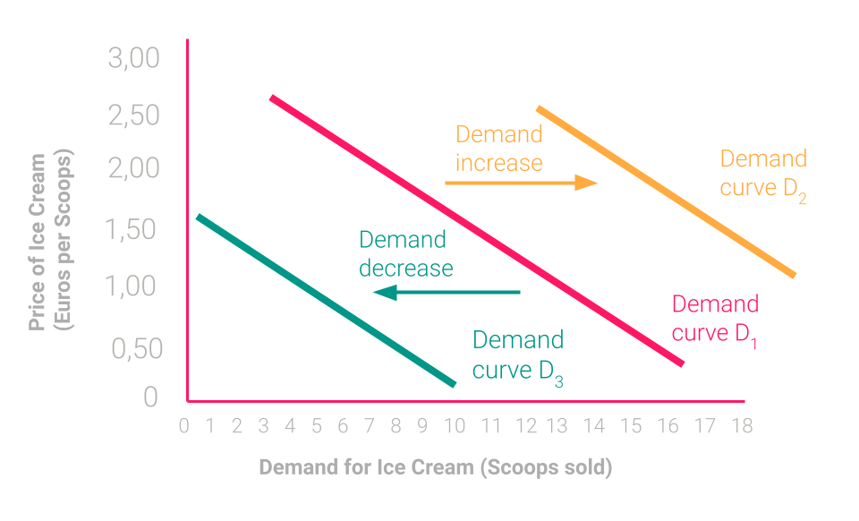

<!DOCTYPE html>
<html lang="en">
  <head>
    <meta charset="utf-8" />
    <meta name="viewport" content="width=device-width, initial-scale=1.0, maximum-scale=1.0, user-scalable=no" />

    <title>Economic Basics</title>
    <link rel="shortcut icon" href="./../../../favicon.ico" />
    <link rel="stylesheet" href="./../../../dist/reset.css" />
    <link rel="stylesheet" href="./../../../dist/reveal.css" />
    <link rel="stylesheet" href="./../../../assets/styles/polkadot-theme.css" id="theme" />
    <link rel="stylesheet" href="./../../../css/highlight/shades-of-purple.css" />

    <link rel="stylesheet" href="./../../.././assets/styles/custom-classes.css" />
    <link rel="stylesheet" href="./../../.././assets/styles/polkadot-theme-base.css" />
    <link rel="stylesheet" href="./../../.././assets/styles/PBA-theme.css" />
    <link rel="stylesheet" href="./../../.././plugin/design-system/index.css" />

  </head>
  <body class="site">
    <header class="site-header">
      <a href="">
        
      </a>
      
    </header>
    <main class="site-reveal reveal">
      <article class="slides">
        <section  data-markdown><script type="text/template">

# Economic Basics
</script></section><section  data-markdown><script type="text/template">
<widget-speaker name="Jonas Gehrlein" position="Research Scientist at Web3 Foundation" image="../../../assets/img/0-Shared/people/jonas.png" github="jonasW3F" twitter="GehrleinJonas" linkedin="jonas-gehrlein" matrix="jonas:web3.foundation"></widget-speaker>

<aside class="notes"><ul>
<li>PhD in Behavioral Economics</li>
<li>Interested in how humans interact with the protocol.</li>
<li>Wrote auction reports (with good overview of how auctions work).</li>
<li>Crowdloan contribution dynamics</li>
</ul>
</aside></script></section><section  data-markdown><script type="text/template">
> Economics is the study of how humans make choices under conditions of scarcity.

_(Author unknown)_

<aside class="notes"><ul>
<li>Without scarcity there is no problem of how to efficiently allocate resources.</li>
<li>In the blockchain space we know scarcity maybe more than anywhere else: Blockspace is a very valuable good.</li>
<li>The ultimate resource is time.</li>
</ul>
</aside></script></section><section  data-markdown><script type="text/template">
## Why do we learn economic concepts?


</script></section><section  data-markdown><script type="text/template">
Economic principles are: <!-- .element: class="fragment" -->

- important for daily life. <!-- .element: class="fragment" -->
- important to understand and design blockchain protocols. <!-- .element: class="fragment" -->

Learning objectives: Building a common understanding of core economic concepts to: <!-- .element: class="fragment" -->

- use in upcoming economics lessons. <!-- .element: class="fragment" -->
- apply to the blockchain space (you are asked to apply the learned concepts in some discussions later). <!-- .element: class="fragment" -->
- help you better understand blockchain protocols and make better decisions in designing them. <!-- .element: class="fragment" -->

<aside class="notes"><ul>
<li>It is also important because in small start-ups and teams, engineers have a big influence on design decisions.</li>
<li>You might be asked to implement certain protocols, which you have to judge if they make sense / can be improved.</li>
<li>Blockchain space is economics on steroids.
Trustlessness mostly mean that we do not trust any humans / institutions, but we have to certainly trust that cryptography works and that economics are sound.</li>
</ul>
</aside></script></section><section  data-markdown><script type="text/template">
## Outline

1. **Lecture** (around 60 minutes)
   1. [Demand & Supply](#demand-&-supply): Market Equilibrium, Decreasing Marginal Utility.
   1. [Market Forms](#market-forms): Monopoly and Oligopoly vs. Perfect Competition.
   1. [Economics of Specialization](#economics-of-specialization): Comparative Advantage, Opportunity Costs, Gains from Trade.
   1. [Behavioral Biases](#behavioral-biases): Where human decision making might be different than traditional economic theories predict.
1. **Discussion & Workshop** (around 120 minutes)
   1. Discussions to foster and apply concepts we learned.
   1. Hands-on applications.
</script></section><section  data-markdown><script type="text/template">
## Demand & Supply

- A strong summer at the German Nordsee reduces hotel prices in Sicili, a famous artist dies and her art increases in price.
- Underlying mechanism of the functioning of markets.
- Determines the quantity of produced goods and their market prices.
</script></section><section  data-markdown><script type="text/template">
## Why do we discuss this?

- Demand and supply are fundamental to understand market equilibrium.
- Understanding market equilibrium is crucial both,
  - to make sense of what happens in current blockchain markets, and
  - to design new markets.
</script></section><section  data-markdown><script type="text/template">
## Demand

Relation between quantity and price as viewed by consumers.

Imagine a person with the following demand for ice cream:

| Price | Demanded Quantity (Alice) |
| ----- | ------------------------- |
| 0.0   | 12                        |
| 0.50  | 10                        |
| 1.00  | 8                         |
| 1.50  | 6                         |
| 2.00  | 4                         |
| 2.50  | 2                         |
| 3.00  | 0                         |

**Law of demand**: When prices increase, quantity demanded of a good (generally) decreases.

<aside class="notes"><ul>
<li>Exception are Veblen goods where demand increases when price increases.</li>
<li>Mostly luxury goods that signal something addition useful to consumption (e.g., status, reputation).</li>
</ul>
</aside></script></section><section  data-markdown><script type="text/template">
## Demand Schedule


</script></section><section  data-markdown><script type="text/template">
## From individual Demand to Market demand

| Price | Demanded Quantity (Alice) | Demanded Quantity (Bob) | Market Demand |
| ----- | ------------------------- | ----------------------- | ------------- |
| 0.0   | 12                        | 7                       | 19            |
| 0.50  | 10                        | 6                       | 16            |
| 1.00  | 8                         | 5                       | 13            |
| 1.50  | 6                         | 4                       | 10            |
| 2.00  | 4                         | 3                       | 7             |
| 2.50  | 2                         | 2                       | 4             |
| 3.00  | 0                         | 1                       | 1             |
</script></section><section  data-markdown><script type="text/template">
## Market Demand


 </script></section><section  data-markdown><script type="text/template">
## Influences on demand?

- Price (Demand moves along the curve) <!-- .element: class="fragment" -->
- Income <!-- .element: class="fragment" -->
- Price of substitution goods <!-- .element: class="fragment" -->
- Preferences <!-- .element: class="fragment" -->
- Expectations <!-- .element: class="fragment" -->
- Number of consumers <!-- .element: class="fragment" -->
</script></section><section  data-markdown><script type="text/template">
## How does it affect the demand curve?


</script></section><section  data-markdown><script type="text/template">
## Supply

- Supply is the other side of the market
- Describes the relation between price and production quantity.

| Price | Supply of Ice cream |
| ----- | ------------------- |
| 0.00  | 0                   |
| 0.50  | 0                   |
| 1.00  | 1                   |
| 1.50  | 4                   |
| 2.00  | 7                   |
| 2.50  | 10                  |
| 3.0   | 13                  |

- Law of supply: Ceteris paribus, the supplied quantity increases in the price of a good.
</script></section><section  data-markdown><script type="text/template">
## Demand meets Supply

<center>

</center>

- What happens when the price is higher than the Eq. Price? <!-- .element: class="fragment" -->
- What if the Quantity is lower than the Eq.Q? <!-- .element: class="fragment" -->
- Moving either supply or demand lead to new Eq. <!-- .element: class="fragment" -->

<aside class="notes"><ul>
<li>Combining the previous graph of market demand with supply we get this graph</li>
</ul>
</aside></script></section><section  data-markdown><script type="text/template">
## Influences on Supply

- Technology <!-- .element: class="fragment" -->
  - Technological advances reduce the production cost and lead to higher output at the same prices. <!-- .element: class="fragment" -->
- Expectations <!-- .element: class="fragment" -->
  - The produced quantity might depend on the expectation about the future prices of the good. <!-- .element: class="fragment" -->
- Number of Sellers <!-- .element: class="fragment" -->
  - Adding or removing sellers from the market drives the overall supply. <!-- .element: class="fragment" -->
</script></section><section  data-markdown><script type="text/template">
## What did we learn?

- Demand & Supply are fundamental forces in markets to find quantity and price in equilibrium. <!-- .element: class="fragment" -->
- Ceteris paribus: <!-- .element: class="fragment" -->
  - demand decreases with increasing price <!-- .element: class="fragment" -->
  - supply increases with increasing price <!-- .element: class="fragment" -->
- There are different factors influencing supply & demand curves. <!-- .element: class="fragment" -->
  - Some shift the equilibrium on the curve <!-- .element: class="fragment" -->
  - Others move the entire curves. <!-- .element: class="fragment" -->
</script></section><section  data-markdown><script type="text/template">
## Market forms

### (Or: why monopoly bad?)

- Typically, economists distinguish between three market forms. <!-- .element: class="fragment" -->
  - Perfect competition: Many firms, many consumers. <!-- .element: class="fragment" -->
  - Oligopoly: More than one firm, many consumers. <!-- .element: class="fragment" -->
  - Monopoly: One firm, many consumers. <!-- .element: class="fragment" -->
- The more competition a firm faces, the less market power it has. <!-- .element: class="fragment" -->
- Market power: ability to affect the price (through choosing a certain production level). <!-- .element: class="fragment" -->

<aside class="notes"><ul>
<li>Special form of Oligopoly is the Duopoly with two firms, something that we see later.</li>
</ul>
</aside></script></section><section  data-markdown><script type="text/template">
## Market Form Examples

- Monopoly: <!-- .element: class="fragment" -->
  - Postal services in many European countries. <!-- .element: class="fragment" -->
  - Railway services in many European countries. <!-- .element: class="fragment" -->
- Oligopoly: <!-- .element: class="fragment" -->
  - Cloud provider (AWS, Google, ...) <!-- .element: class="fragment" -->
  - Mobile phone service. <!-- .element: class="fragment" -->
- Perfect Competition: <!-- .element: class="fragment" -->
  - Consumer products with low barrier to entry (e.g., iced tea) <!-- .element: class="fragment" -->
</script></section><section  data-markdown><script type="text/template">
## Why do we discuss this?

The current web2 landscape consists of several firms with a lot of market power in their respective market segment. <!-- .element: class="fragment" -->

We want to understand, from an economic perspective, why too much market power is not a good thing. <!-- .element: class="fragment" -->
</script></section><section  data-markdown><script type="text/template">
## Perfect Competition

Under perfect competition, there are so many firms that a single firm's production quantity, $q$, does not affect the price, $p$, in the market.

That is, the firm takes the market price as given and solves:

$$\max_q pq - c(q)$$

Here, $c(q)$ is the cost function of the firm.
We usually assume that it is increasing and convex, $c'(q) > 0$, $c''(q)>0$.

<aside class="notes"><ul>
<li>Draw a picture of $c$, explaining what convex means: increasing marginal cost; i.e., the more units you produce the more expensive an additional unit becomes. Second derivative is positive on the whole domain.</li>
<li>We assume convexity because of decreasing returns of scale (in a world of scarcity firms cannot forever increase their demand for goods without affecting price)</li>
<li>maximization problem d/dq = p - c&#39;(q) = 0</li>
</ul>
</aside></script></section><section  data-markdown><script type="text/template">
## Perfect Competition

- The optimal quantity $q$ satisfies $p = c'(q).$ <!-- .element: class="fragment" -->
- In the optimum, each firm will set its quantity so that its marginal cost, $c'(q)$, equals the market price. <!-- .element: class="fragment" -->
- This makes sense: The firm produces up to the point where an additional unit costs exactly what it gets for it on the market. <!-- .element: class="fragment" -->
</script></section><section  data-markdown><script type="text/template">
## Monopoly

- The monopolist is the single seller of the good or service and it serves the entire market. <!-- .element: class="fragment" -->
- Generally the market is characterized by a high barrier of entry (either by investment or legal restrictions). <!-- .element: class="fragment" -->
- The monopolist is price maker (by choosing quantity) and profit maximizer. <!-- .element: class="fragment" -->
</script></section><section  data-markdown><script type="text/template">
## Monopoly

- In a monopoly, the monopolist can affect the price by choosing $q$.
- Suppose market demand is $P(q)$, where $P(q)$ is a decreasing function.
- Then, the problem of the monopolist is $$\max_q P(q)q-c(q).$$

<aside class="notes"><ul>
<li>q is the quantity of the produced good</li>
<li>Choosing q is exactly why a monopoly is a monopoly.</li>
<li>There is no supply curve for the monopolist, because it can set the price by setting a quantity!</li>
</ul>
</aside></script></section><section  data-markdown><script type="text/template">
## Monopoly

- The optimal quantity $q$ satisfies $$P(q)+P'(q)q = c'(q).$$
- This says: marginal revenue equals marginal cost.
- In the optimum, the monopoly produces up to the point where the revenue of an additional unit exactly equals the additional cost of producing it.
- Because demand is decreasing, $P'(q) < 0$, the price is above marginal cost, $P(q) > c'(q)$.

<aside class="notes"><ul>
<li>Product rule of derivation: y = u*v ; y&#39; = u&#39;*v + v&#39;*u</li>
</ul>
</aside></script></section><section  data-markdown><script type="text/template">
## Monopoly

> Most of the world's diamond supply comes from South African states. Assume that the marginal costs of mining a diamond is 1,000 USD and the demand function is characterized by $P(q) = 13,000 - q$

- Which price, quantity and hence profit emerges <!-- .element: class="fragment" -->
  - under perfect competition? <!-- .element: class="fragment" -->
  - under a monopoly? <!-- .element: class="fragment" -->

<aside class="notes"><ul>
<li><p>Perfect competition:</p>
<ul>
<li>We learned that under perfect competiton, p = marginal costs.</li>
<li>That means, p = 13,000 - q</li>
<li>1,000 = 13,000 - q</li>
<li>q = 12,000 under perfect competition.</li>
<li>Profit is p<em>q-c</em>q = $0</li>
<li>Note that the firm makes zero profit. Why? Because the barrier of entry (and exit) is so low, that firms would keep joining until the profit is at 0 - that is exactly what perfect competition means!</li>
</ul>
</li>
<li><p>Monoploy:</p>
<ul>
<li>We learned that marginal cost equal marginal revenue.</li>
<li>Revenue is: $\pi = P(q)*q - c(q)$ -&gt; $\pi = (13,000-q)*q$ -&gt; $\frac{\delta \pi}{\delta q} = 13,000 - 2q$.</li>
<li>We set the marginal revenue to the marginal costs of 1000.</li>
<li>1000 = 13,000 - 2q</li>
<li>q* = 6000</li>
<li>profit = 36mio</li>
</ul>
</li>
</ul>
</aside></script></section><section  data-markdown><script type="text/template">
## The Problem with Monopoly

- As we have seen, the price is greater than marginal costs, $P^* > c'(q)$. <!-- .element: class="fragment" -->
- There are consumers that would buy additional quantity at a slightly reduced price. <!-- .element: class="fragment" -->
- These consumers would gain additional utility that is just below $P^*$ (because they are ready to buy at a price just below $P^*$). <!-- .element: class="fragment" -->
- On the other hand, the marginal cost describes the additional cost to the monopolist when slightly increasing $q$. <!-- .element: class="fragment" -->
</script></section><section  data-markdown><script type="text/template">
## The Problem with Monopoly

- Since the marginal cost is lower than the marginal gain to the consumers, total utility would increase when the monopolist would slightly increase $q$. <!-- .element: class="fragment" -->
- From a utilitarian perspective, total welfare should be maximized in a market. This does not happen in a monopoly. <!-- .element: class="fragment" -->
- The loss in welfare in a monopoly is sometimes referred to as a dead-weight loss. <!-- .element: class="fragment" -->
</script></section><section  data-markdown><script type="text/template">
## The Problem with Monopoly

Monopolies are bad because there are unrealized _gains from trade_!

- Often monopolies are deemed to be bad because they charge high prices to existing customers.
- This is _not_ the argument here. Here, monopolies are bad because they prevent potential buyers from buying _at all._
- Prices merely constitute a transfer. But transfers do not matter for the utilitarian who wants to maximize total welfare.
</script></section><section  data-markdown><script type="text/template">
## Oligopolies

- Oligopolies are somewhere between monopolies and perfect competition. <!-- .element: class="fragment" -->
- Because of the competition between firms, <!-- .element: class="fragment" -->
  - prices are lower, <!-- .element: class="fragment" -->
  - quantities higher, and <!-- .element: class="fragment" -->
  - the unrealized gains from trade are lower. <!-- .element: class="fragment" -->
</script></section><section  data-markdown><script type="text/template">
## What did we learn?

- Markets differ in how much market power the firms possess. <!-- .element: class="fragment" -->
- Economics typically distinguishes between three forms (ordered by increasing market power): <!-- .element: class="fragment" -->
  - Perfect competition: many firms in the market. <!-- .element: class="fragment" -->
  - Oligopoly: few firms in the market. <!-- .element: class="fragment" -->
  - Monopoly: one firm in the market. <!-- .element: class="fragment" -->
- The problem of monopoly is: unrealized gains from trade because monopolist set inefficiently low quantity, resulting in an inefficiently high price. <!-- .element: class="fragment" -->
</script></section><section  data-markdown><script type="text/template">
## Economics of Specialization

### (or: why trade good?)

> It is the maxim of every prudent master of a family, never to attempt to make at home what it will cost him more to make than to buy.

_(Adam Smith, 1776)_

- In this part, we take a closer look at the following concepts: <!-- .element: class="fragment" -->
  - Comparative advantage. <!-- .element: class="fragment" -->
  - Opportunity costs. <!-- .element: class="fragment" -->
  - Gains from trade. <!-- .element: class="fragment" -->
</script></section><section  data-markdown><script type="text/template">
## The economic question

- Empirical puzzle: many countries trade even though one has an advantage in producing many of the traded goods. <!-- .element: class="fragment" -->
- For example, the US are theoretically well-equipped to cheaply produce both <!-- .element: class="fragment" -->
  - complex computer chips, <!-- .element: class="fragment" -->
  - agricultural goods. <!-- .element: class="fragment" -->
- However, US have specialized in producing the former and importing many agricultural goods from abroad. <!-- .element: class="fragment" -->
- Question: Why do countries specialize; why do countries trade? <!-- .element: class="fragment" -->
</script></section><section  data-markdown><script type="text/template">
## Why do we discuss this?

- Polkadot allows for specialized blockchains (so-called parachains) to share security and trustless communicate.
- We want to understand, from an economic perspective, the gains that arise from such specialization.
</script></section><section  data-markdown><script type="text/template">
## A simple model of specialization and trade

- Consider Alice and Bob. <!-- .element: class="fragment" -->
- Both are farmers that can produce meat and tomatoes. <!-- .element: class="fragment" -->
- Both are time constrained; i.e., they can only produce for 8 hours per day. <!-- .element: class="fragment" -->
- Alice can produce both more meat and more tomatoes per hour. <!-- .element: class="fragment" -->
- Should Alice ever specialize in the production of one good and trade with Bob? <!-- .element: class="fragment" -->
</script></section><section  data-markdown><script type="text/template">
## A simple model of specialization and trade

|       | Meat     | Tomatoes   |
| ----- | -------- | ---------- |
| Alice | 2 hrs/kg | 1 hrs/kg   |
| Bob   | 6 hrs/kg | 1.5 hrs/kg |

- Clearly, Alice has an absolute advantage at both producing meat and tomatoes. <!-- .element: class="fragment" -->

<aside class="notes"><ul>
<li>Write on whiteboard the kg/h measures: Alice: 2kg 4kg, Bob: 1/6kg, 2/3kg</li>
</ul>
</aside></script></section><section  data-markdown><script type="text/template">
## A simple model of specialization and trade

- We do not know anything about their preferences, but suppose the following: <!-- .element: class="fragment" -->
  - When they produce just for themselves (a situation that we call autarky in the following), both find it optimal to spend half their time producing meat and the other half producing tomatoes. <!-- .element: class="fragment" -->
  - Both prefer more of both meat and tomatoes to less of both. <!-- .element: class="fragment" -->
- The question is: can they do better by trading (i.e., can they each obtain more meat and more tomatoes)? <!-- .element: class="fragment" -->
</script></section><section  data-markdown><script type="text/template">
## Autarky

- In autarky, <!-- .element: class="fragment" -->
  - Alice produces 1/2 kg of meat per hour and 1 kg of tomatoes per hour. <!-- .element: class="fragment" -->
  - Bob produces 1/6 kg of meat per hour and 2/3 kg of tomatoes per hour. <!-- .element: class="fragment" -->
- So, in autarky, per day: <!-- .element: class="fragment" -->
  - Alice produces 2 kg of meat and 4 kg of tomatoes. <!-- .element: class="fragment" -->
  - Bob produces 2/3 kg of meat and 8/3 kg of tomatoes. <!-- .element: class="fragment" -->

<aside class="notes"><ul>
<li>Sum up the total amount produced in the table on the whiteboard: Alice: 6/3, 12/3, Bob: 2/3, 8/3 makes a total of Meat: 8/3, Tomatoes 20/3.</li>
</ul>
</aside></script></section><section  data-markdown><script type="text/template">
## Specialization

- Suppose both _specialize_ to some degree.
  - Bob only produces tomatoes. <!-- .element: class="fragment" -->
  - Alice produces meat for 6 hours a day and produces tomatoes for 2 hours a day. <!-- .element: class="fragment" -->
- Question: can they divide the jointly produced meat and tomatoes so that both are better off than in autarky? <!-- .element: class="fragment" -->
</script></section><section  data-markdown><script type="text/template">
## Specialization

- Yes, because the joint production is higher under specialization. <!-- .element: class="fragment" -->
- Under specialization: <!-- .element: class="fragment" -->
  - Total meat produced per day is 3 kg (i.e., more than the 8/3 kg produced in autarky). <!-- .element: class="fragment" -->
  - Total tomatoes produced per day is 2 kg (from Alice) and 16/3 kg (from Bob), summing up to 22/3 kg (vs. 20/3 kg in autarky). <!-- .element: class="fragment" -->

<aside class="notes"><ul>
<li>Table with production under specialization: 3kg and 2kg for Alice, 0kg 16/3kg for Bob.</li>
<li>Sum of production in specialization.</li>
</ul>
</aside></script></section><section  data-markdown><script type="text/template">
## Specialization

<!-- prettier-ignore -->
|     |     | Meat in Autarky | Tomatoes in Autarky | Meat when Specializing | Tomatoes when Specializing |
| --- | --- | --------------- | ------------------- | ---------------------- | -------------------------- |
|Alice | Produced | 2 kg | 4 kg | 3 kg | 2 kg |
| | Traded | | | -7/8 kg | 2 1/3 kg|
| | Consumed | 2 kg | 4 kg | 2 1/8 kg | 4 1/3 kg |
|Bob | Produced | 2/3 kg | 2 2/3 kg | 0 kg | 5 1/3 kg |
| | Traded | | | 7/8 kg | -2 1/3 kg|
| | Consumed | 2/3 kg | 2 2/3 kg | 7/8 kg | 3 kg |
</script></section><section  data-markdown><script type="text/template">
## What happened here?

- While Alice has an absolute advantage over Bob in both dimensions, she only has a comparative advantage in one.<!-- .element: class="fragment" -->
- Comparative advantage in producing X = lower opportunity cost of producing X. <!-- .element: class="fragment" -->
- Opportunity cost of producing X = how much of Y could I produce instead? <!-- .element: class="fragment" -->

<aside class="notes"><ul>
<li>Question: What are your personal opportunity costs of sitting here?</li>
</ul>
</aside></script></section><section  data-markdown><script type="text/template">
## What happened here?

<!-- prettier-ignore -->
|     | Opportunity cost of 1 kg of meat | Opportunity cost of 1 kg of tomatoes |
| --- | -------------------------------- | ------------------------------------ |
| Alice | 2 kg of tomatoes | 1/2 kg of meat|
| Bob | 4 kg of tomatoes| 1/4 kg of meat|

<aside class="notes"><ul>
<li>Alice has lower opp. cost of producing meat, but higher costs when producing tomatoes.</li>
<li>Bob has lower opp. cost of producing tomatoes.</li>
</ul>
</aside></script></section><section  data-markdown><script type="text/template">
## What did we learn?

- Gains from trade arise because of comparative advantages. <!-- .element: class="fragment" -->
- Comparative advantage = lower opportunity cost. <!-- .element: class="fragment" -->
- Comparative advantages always exist (even in the presence of absolute advantages). <!-- .element: class="fragment" -->
- If everyone pursues her or his comparative advantage, then everyone can be made better off through trade. <!-- .element: class="fragment" -->

<aside class="notes"><ul>
<li>This is especially important to notice when collaborating in a team.</li>
<li>Despite having somebody the absolute advantage in many domains, it might still be good to specialize and delegate tasks</li>
</ul>
</aside></script></section><section  data-markdown><script type="text/template">
## Behavioral Biases

- For a long time economic theory was built on the assumption that their actors were rational. <!-- .element: class="fragment" -->
  - No other-regarding preferences. <!-- .element: class="fragment" -->
  - Processes all available information efficiently. <!-- .element: class="fragment" -->
  - Not influenced by emotions. <!-- .element: class="fragment" -->
- This works well in many circumstances (e.g., on an aggregate level or assuming highly rational actors like firms executives) but in many it doesn't <!-- .element: class="fragment" -->
- Most humans are prone to Behavioral Biases and are influenced by social preferences. <!-- .element: class="fragment" -->
</script></section><section  data-markdown><script type="text/template">
## Behavioral Economics

- Behavioral economics is mainly concerned with the bounds of rationality of economic agents. <!-- .element: class="fragment" -->
- Influenced by psychological aspects such as emotions, cogntition as well as cultural and societal factors. <!-- .element: class="fragment" -->
- Daniel Kahnemann, a psychologist, received the 2002 Nobel Prize for Prospect Theory, a fundamental theory in Behavioral Economics. <!-- .element: class="fragment" -->
  - PT models the fact that individuals assess their losses differently than their gains. <!-- .element: class="fragment" -->
</script></section><section  data-markdown><script type="text/template">
## Behavioral Economics

### Behavior is not random! <!-- .element: class="fragment" -->

- Confirmation Bias: Decision makers focus on information that cater to their prior belief / opinion and neglect other information. <!-- .element: class="fragment" -->
- Sunk Cost Fallacy: Instead of cutting losses, decision makers continue to pour resources into a failed endeavour. <!-- .element: class="fragment" -->
- Herding Effect: Heuristic where people follow the crowd without making their own informed decision. <!-- .element: class="fragment" -->
- Gambler's Fallacy: In many situations probabilities of repeated events are independent from each other. Often decision makers fail to understand this. <!-- .element: class="fragment" -->
- Default Effect: People tend to stick with pre-selected choices. <!-- .element: class="fragment" -->
- Overconfidence: People overestimate their abilities. <!-- .element: class="fragment" -->

<aside class="notes"><ul>
<li>Overconfidence: If asked, more than 50% of people think they drive above average. BUT has also positive effects.</li>
</ul>
</aside></script></section><section  data-markdown><script type="text/template">
> Simply put, the stock market is a creation of man and therefore reflects human idiosyncrasy -- Ralph Nelson Elliott
</script></section><section  data-markdown><script type="text/template">
<!-- .slide: data-background-color="#000" -->

# Break (10 minutes)
</script></section><section  data-markdown><script type="text/template">
<!-- .slide: data-background-color="#8D3AED" -->

# Classroom Discussions

<aside class="notes"><ul>
<li>Roughly 20 minutes</li>
</ul>
</aside></script></section><section  data-markdown><script type="text/template">
## Behavioral Biases

- Which biases might be responsible for the following situations?
- How can we mitigate the impact of those biases?
</script></section><section  data-markdown><script type="text/template">
## Situation 1:

> One influential crypto personality posts on a blockchain forum that they think that Dogecoin is undervalued. Five hundred amateur investors buy it without even doing any additional research.

<aside class="notes"><ul>
<li>Herding effect</li>
</ul>
</aside></script></section><section  data-markdown><script type="text/template">
## Situation 2:

> A crypto enthusiast keeps mentioning that she is buying the dip constantly to reduce her average buying price. However, it certainly looks like the token is dead, without any notable improvements by the team.

<aside class="notes"><ul>
<li>Sunk Cost Fallacy</li>
<li>Learn to accept losses</li>
</ul>
</aside></script></section><section  data-markdown><script type="text/template">
## Situation 3:

> Peter wants to invest into crypto and fancies the ZVL token. Mentally, he is already looking forward to finally buy the token, but a friend urges him to do some more research. He agrees and is reading through articles that pop up after googling "Why you should invest into ZVL".

<aside class="notes"><ul>
<li>Confirmation Bias</li>
<li>Mitigating by actively looking outside your &quot;opinion-bubble&quot;</li>
</ul>
</aside></script></section><section  data-markdown><script type="text/template">
## Situation 4:

> Elon Musk tweets that he loves Dogecoin. The price increases.

<aside class="notes"><ul>
<li>Herding effect</li>
<li>But maybe rational?</li>
</ul>
</aside></script></section><section  data-markdown><script type="text/template">
<!-- .slide: data-background-color="#8D3AED" -->

# Where do you see yourself or others suffer from behavioral biases?
</script></section><section  data-markdown><script type="text/template">
## Bitcoin Price Chart


Based on what we’ve discussed about market equilibrium, why might the price of Bitcoin have peaked at `~$68,000` in December 2021? What market dynamics would have to have been true to hit that peak, and then what might have changed for the price to drop to the current price of `$21,000` only 6 months later?

<aside class="notes"><ul>
<li>Open discussion with students. Answers to expect:<ul>
<li>Price movement over time. I.e., the result of a Demand &amp; Supply curve over time.</li>
<li>There is a shift in demand by expectations, (aggregated) income etc. all the previous factors that we described</li>
<li>Interestingly: Here is no shift in Supply if the protocol is seen as the producer of bitcoin!! It is fixed. However, the supply on the market does change.</li>
</ul>
</li>
<li>This discussion will lead to discussing where the demand of a token comes from.</li>
<li>If possible: Grab this again in the discussion of inflation (i.e., the supply is increasing but deterministic, especially its independent of price)</li>
<li>Where does demand come from?</li>
<li>Why should Bitcoin have value?</li>
</ul>
</aside></script></section><section  data-markdown><script type="text/template">
## Monopoly

- We have seen: Monopolists' market power leads to inefficient outcomes.
- In the model we considered, the monopolist chose too low a quantity, which yielded too high a price, and too little trade.
- Web 2.0 is full of firms that have a monopoly-like position in their respective domain:
  - Google
  - Uber
  - AirBnb
  - ...
- How do these firms exert their market power, if not over quantities?

<aside class="notes"><ul>
<li>fees (uber, airbnb)</li>
<li>surge pricing (uber)</li>
<li>opaque auction mechanism (google in the case of online ads)</li>
</ul>
</aside></script></section><section  data-markdown><script type="text/template">
<!-- .slide: data-background-color="#8D3AED" -->

# Activities
</script></section><section  data-markdown><script type="text/template">
## Activities Today & Tomorrow

- You can earn points by applying the concepts presented in this course to similar situations when playing with/against your colleagues. <!-- .element: class="fragment" -->
- In session 2.1, 2.2 and 2.3, you can increase your budget (starting at 0) during several economic games. <!-- .element: class="fragment" -->
- We have a total budget of $1800 for this. <!-- .element: class="fragment" -->
- The budget is split between all the games that we play and total points earned by all of you are dynamically adjusted to correspond to the budget. <!-- .element: class="fragment" -->
- In 2.3, there is a big final: You can use your earnings to bid for amazing NFTs by a professional artist in an experimental auction setting. <!-- .element: class="fragment" -->
- Disclaimer: If a bug occurs and the reward points are messed up or something else goes wrong, we may intervene. <!-- .element: class="fragment" -->
</script></section><section  data-markdown><script type="text/template">
## Wallet creation

Create your wallet now here:

#### **https://otree.w3f.tech/room/academy_wallet**

- Your balance is tracked in a wallet app.
- The points are translated to USD after each game.
- Keep your seed phrase and do not share it with others!
- You can constantly check your balance by opening the wallet app link.

<aside class="notes"><ul>
<li>Completely trusted and centralized xD</li>
<li>If you leave your cookies you can simply log back in otherwise you need your seed phrase.</li>
</ul>
</aside></script></section><section  data-markdown><script type="text/template">
# Everybody got a wallet?
</script></section><section  data-markdown><script type="text/template">
<!-- .slide: data-background-color="#8D3AED" -->

# Make sure to have your Seed phrase for all games!
</script></section><section  data-markdown><script type="text/template">
## Game 1: Ultimatum game

- You are randomly matched with another student in the classroom. <!-- .element: class="fragment" -->
- The interaction is anonymous. <!-- .element: class="fragment" -->
- Player 1 gets an endowment of 100 points. <!-- .element: class="fragment" -->
- Player 1 can offer Player 2 between 0 and 100 points. <!-- .element: class="fragment" -->
- Player 2 sees the offer and can decide to accept or reject the offer. <!-- .element: class="fragment" -->
- If the offer is accepted, the endowment is split according to the offer. <!-- .element: class="fragment" -->
- If the offer is rejected, both get 0 points. <!-- .element: class="fragment" -->
- Budget for the game $400. <!-- .element: class="fragment" -->
- There is no right or wrong here. It is your choice how to behave in this context! <!-- .element: class="fragment" -->
</script></section><section  data-markdown><script type="text/template">
<!-- .slide: data-background-color="#8D3AED" -->

# Questions?
</script></section><section  data-markdown><script type="text/template">
## Let's start!

**https://otree.w3f.tech/room/academy_ultimatum**
</script></section><section  data-markdown><script type="text/template">
## Game 1: Discussion

- What were your strategies here?
- What do you think we would expect from rational players?
- Why did people offer something?
- What did we measure here?

<aside class="notes"><ul>
<li>What would we expect from rational players (they do not know the concept of Nash Equilibrium yet but intuitively they can argue).</li>
<li>What do you expect the data to look like?</li>
<li>Did we measure fairness? No.</li>
<li>How could we measure fairness?<ul>
<li>Dictator game</li>
</ul>
</li>
<li>Talk about results in the literature:<ul>
<li>Many people offer 40-50%</li>
<li>Almost nobody offers more than 50%</li>
<li>Many people reject below 30%</li>
<li>This is not only because of the stakes. There are experiments in Thailand and Indonesia where they play with half year salary.</li>
</ul>
</li>
</ul>
</aside></script></section><section  data-markdown><script type="text/template">
<!-- .slide: data-background-color="#8D3AED" -->

# Game 1: Results!
</script></section><section  data-markdown><script type="text/template">
## Game 2: Cournot Competition

- Economic model
- Firms compete by setting quantities
- Identical product
- Demand always meets supply
- Named after French mathematician Augustin Cournot.

<aside class="notes"><ul>
<li>Game 1: Cournot Competition with 2 firms (players from the audience) for 10 rounds</li>
</ul>
</aside></script></section><section  data-markdown><script type="text/template">
## Game 2: Overview

- Cournot competition (Duopoly!) <!-- .element: class="fragment" -->
- 2 firms (you play 1 firm!) <!-- .element: class="fragment" -->
- Each of you individually set a quantity to produce. <!-- .element: class="fragment" -->
- All units are sold, but the price decreases in the quantity. <!-- .element: class="fragment" -->
- Repeated over 10 rounds <!-- .element: class="fragment" -->
- Points accumulate and are added to your budget. <!-- .element: class="fragment" -->
- Budget for the game: $400 <!-- .element: class="fragment" -->
</script></section><section  data-markdown><script type="text/template">
## Game 2: Rules


</script></section><section  data-markdown><script type="text/template">
<!-- .slide: data-background-color="#8D3AED" -->

# Questions?
</script></section><section  data-markdown><script type="text/template">
## Let's start!

#### **https://otree.w3f.tech/room/academy_cournot**
</script></section><section  data-markdown><script type="text/template">
## Game 2: Discussions

- What strategy did you employ?
- Did your behavior change over the rounds?
- What was the best choice for each firm?

<aside class="notes"><ul>
<li>Calculate equilibrium:</li>
<li>$\pi = P(Q) * q$</li>
<li>For Firm 1: $\pi = (60 - q_1 - q_2) * q_1$</li>
<li>solve for optimal $q_1$ -&gt; delta-pi / delta-q1 = -2q_1 - q_2 + 60 =! 0</li>
<li>q_1* = (60 - q_2) / 2</li>
<li>q_2* = (60 - q_1) / 2</li>
<li>q1* = (60 - (60-q1*)/2) / 2</li>
<li>= 30 - 15 + (q_1*/4) = q_1*</li>
<li>= q_1* = q_2* = 20</li>
<li>Show with example. If firm 1 plays 20 then 19 leads to smaller payoff and 21 for other firm</li>
</ul>
</aside></script></section><section  data-markdown><script type="text/template">
<!-- .slide: data-background-color="#8D3AED" -->

# Game 2: Results!
</script></section><section  data-markdown><script type="text/template">
## Conclusion

- We learned:
  - fundamental economic concepts that are important to navigate the blockchain space.
  - a few behavioral biases that cause humans to behave suboptimally.
  - to transfer the concepts to the blockchain space.
  - experienced economic concepts ourselves by playing a cournot competition.
</script></section><section  data-markdown><script type="text/template">
## Further studying material

**Economics**

- [Polkadot Economics](https://research.web3.foundation/en/latest/polkadot/overview/2-token-economics.html) - Tokenomics of Polkadot

**Stablecoins**

- [Before Terra Luna collapse](https://www.coindesk.com/layer2/2022/04/22/built-to-fail-why-terrausds-growth-is-giving-finance-experts-nightmares/) - An article that warns about the risks of Terra Luna just two weeks before its collapse.
- [After Terra Luna collapse](https://thebittimes.substack.com/p/what-can-other-algorithmic-stablecoins?s=r) - Interesting information about how Terra luna collapsed.
- [Deep Dive into Collapse](https://github.com/adit313/TerraDeepDive)
</script></section>
      </article>
    </main>

    <script src="./../../../dist/reveal.js"></script>
    <script src="./../../../plugin/markdown/markdown.js"></script>
    <script src="./../../../plugin/highlight/highlight.js"></script>
    <script src="./../../../plugin/zoom/zoom.js"></script>
    <script src="./../../../plugin/notes/notes.js"></script>
    <script src="./../../../plugin/math/math.js"></script>

    <script type="module">
      import DesignSystem from "./../../../plugin/design-system/design-system.js"

      function extend() {
        var target = {};
        for (var i = 0; i < arguments.length; i++) {
          var source = arguments[i];
          for (var key in source) {
            if (source.hasOwnProperty(key)) {
              target[key] = source[key];
            }
          }
        }
        return target;
      }

      // default options to init reveal.js
      var defaultOptions = {
        controls: true,
        progress: true,
        history: true,
        center: true,
        transition: 'default', // none/fade/slide/convex/concave/zoom
        plugins: [
          RevealMarkdown,
          RevealHighlight,
          RevealZoom,
          RevealNotes,
          RevealMath,
          DesignSystem
        ]
      };

      // options from URL query string
      const queryOptions = Reveal().getQueryHash() || {};

      const options = extend(defaultOptions, {"width":1400,"height":900,"margin":0,"minScale":0.2,"maxScale":2,"transition":"none","controls":true,"progress":true,"center":true,"slideNumber":true,"backgroundTransition":"fade"}, queryOptions);
      options.baseUrl = '';
      Reveal.initialize(options);
    </script>
  </body>
</html>
